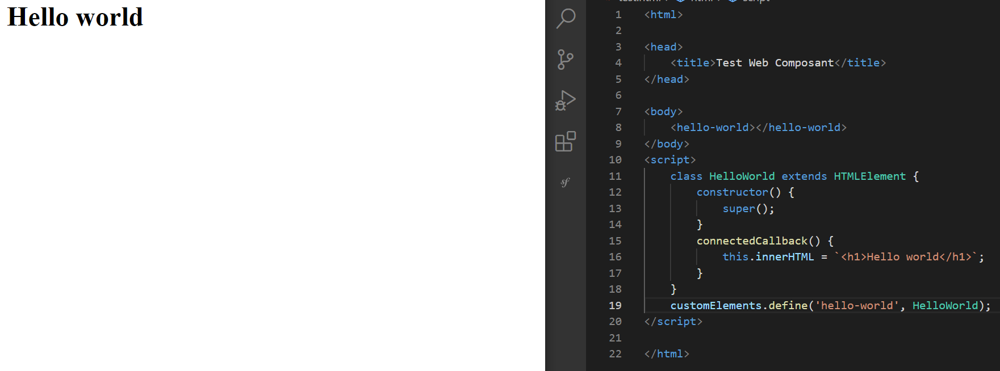
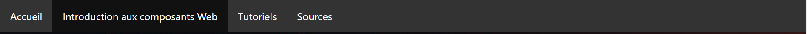
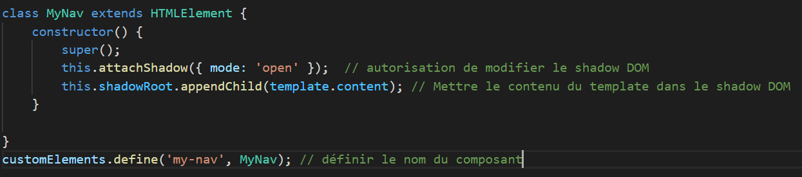
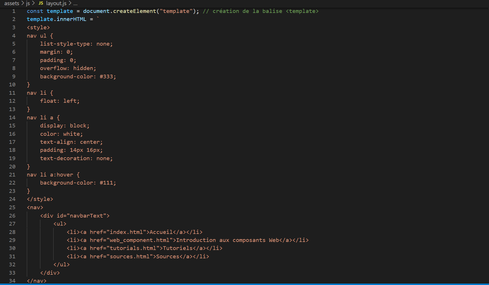
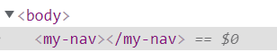
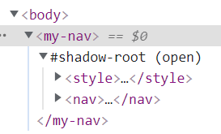
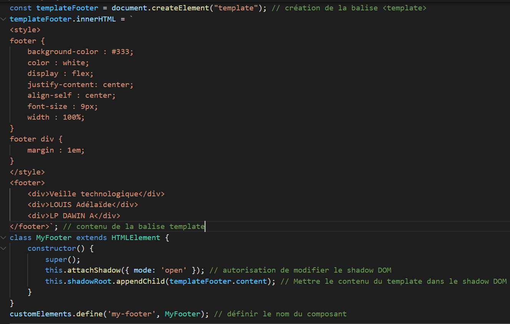

Nous allons débuté ce tutoriel par écrire un "Hello World !". Il suffit d'avoir des connaissances en
HTML, CSS et JS.
Commençons par écrire la class HelloWorld dans un fichier JS. Cette classe doit hériter de
HTMLElement. Il ne faut pas oublier de donner un nom au composant grâce à la méthode define.
La méthode connectedCallback() est appelé après le constructeur et ici, elle nous permet
d'ajouter un titre h1 dans notre composant.
Maintenant, dans un fichier HTML, on place notre balise personnalisée dans le body.

Réalisation d'un layout
Dans cette partie je vous propose de vous expliquer comment j'ai réalisé le layout du mon site
(header + footer). Comme la partie du header et du footer se répète sur chacune de mes pages, j'ai
décidé de créer un web component pour éviter la duplication de code.

Header avec un item sélectionnéFooter
Cet exemple manie à la fois le custom element, le html template et le shadow dom.
La première étape est de déclarer des classes. J'en ai fait deux : une pour ma nav et l'autre pour le
bas de page.

Code de la classe
Pour la deuxième étape : on va réaliser un template. Pour cela, dans le fichier JS j'ai ajouté :
const template = document.createElement("template"); qui va ajouter une balise template
dans le code. Pour écrire à l'intérieur on va utiliser
innerHTML. Dedant, j'ai pu marqué le style ainsi que le contenu que je souhaitais.

Code du Template de la nav
Cependant, à ce stade, quand on souhaite voir le rendu : rien de s'affiche ! De plus, notre code
n'apparait pas dans l'inspecteur du navigateur.

Balise nav vide
Pour résourdre ce problème, il faut rajouter ces deux lignes de code :
La première va nous autoriser à modifier le shadom dom, et la seconde va nous permettre d'ajouter le
contenu qu'on souhaite à l'intérieur. Ce fragment de code est totalement indépendant.

Code de la nav qui apparait
J'ai répété les mêmes étapes pour faire le footer

Code final du Footer
Utilisation d'une librairie
Je vais vous présenter la librairie Lit. Cette librairie nous permet de créer des composants de
manières plus rapide et plus claire. On a le choix d'utiliser JS ou TypeScript.
Pour l'installer il suffit de taper la commande npm i lit
Il faut faire une importation dans les fichiers JS
import {LitElement, html} from 'lit';.
Créons désormais notre premier composant avec Lit !
Dans un fichier JS :
import {LitElement, html} from 'lit';
class HelloWorld extends LitElement {....
}
customElements.define('hello-word', HelloWorld);
A ce stade, il n'y a pas de grande différence avec le Hello World que nous avons fait
précédemment.
Le LitElement est une sous classe de HTMLElement.
Quand on souhaite faire un template : la syntaxe change. Il faut utiliser la méthode
render().
import {LitElement, html} from 'lit';
class MyElement extends LitElement {
render() {
return html`<p>Hello from my template.</p>`;
}
}
customElements.define('my-element', MyElement);
Si vous souhaitez approfondir vos connaissances en Lit, je vous conseille le tutoriel intéractif
présent sur le site de lit : ici .
Si vous souhaitez apprendre plus au sujet des web components, j'ai recensé des articles et des vidéos qui
pourraient vous intéresser. ici